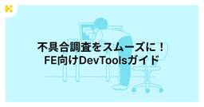
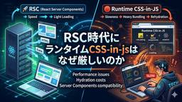
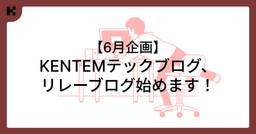

KENTEM TechBlog
https://tech.kentem.jp/
建設業のDXを実現するKENTEMの技術ブログです。
フィード

不具合調査をもっとスムーズに！FE向けDevToolsガイド 1
1
KENTEM TechBlog
この記事は、 テックブログ強化月間 リレーブログ企画2026 参加の記事です。 フロントエンドの開発中、原因不明のバグに時間を費やした経験は誰しもあるのではないでしょうか。 console.log を仕込んでは確認し、また仕込んでは確認し……そんなループを繰り返していると、気づけばコードがデバッグ用のログだらけになってしまうことがあります。 ブラウザのDevToolsには、そういった作業を効率化する機能が数多く揃っています。 コードを一切書き換えずにログを仕込んだり、DOMの変更をリアルタイムで検知したり、変数の状態をまとめて監視したりと、使いこなすほどデバッグのスピードが上がります。 この記…
2日前

RSC時代にランタイムCSS-in-jsはなぜ厳しいのか
KENTEM TechBlog
この記事は、 テックブログ強化月間 リレーブログ企画2026 参加の記事です。 先日Panda CSSでデザインシステムのコンポーネントライブラリを作成した際の記事を投稿させていただきました。 そこでちょっと触れた、ランタイムで動作するCSS-in-JSはRSCとの噛み合わせがあまり良くないので、そもそもの選定候補から外したという話を書かせていただきました。 その話をちょっと深ぼろうと思います。 「styled-componentsはRSCと相性が悪い」という話はなんとなく聞いたことはあるけど、本当のところ何が問題なのか？ CSS-in-JSとは 1. Global Namespace（グロー…
3日前
Panda CSS🐼でコンポーネントライブラリを作る ── RSC時代の選定理由から実運用まで
KENTEM TechBlog
この記事は、 テックブログ強化月間 リレーブログ企画2026 参加の記事です。 2年ほど前、社内のデザインシステムを基にフロントエンド向けのコンポーネントライブラリを実装することになり、スタイリングライブラリとして最終的にPanda CSSを採用しました🐼 本記事では、Panda CSS（以下 Panda）の選定背景から、理解の前提となる周辺知識、既存プロジェクトへの導入のしやすさ、基本的な使い方、運用上の注意点等を順に紹介していきます。 Pandaを理解するための前提知識 PostCSS カスケードレイヤー cva (class-variance-authority) なぜPandaなのか🐼…
4日前
TanStack Queryを安全に書く—queryOptionsとskipToken— 1
KENTEM TechBlog
この記事は、 テックブログ強化月間 リレーブログ企画2026 参加の記事です。 こんにちは！フロントエンドエンジニアのY.Kです！ 今回はTanStack Query v5で使っている、「安全性を少し高めるための小ネタ」を2つ紹介します。 どれも今のコードを大きく変えずに試せるものばかりです。 queryOptions—定義を1箇所に集約する よくやる書き方 queryOptions でまとめる skipToken — queryFnに型安全性を よくやる書き方 skipTokenを返す コラム: queryFn に async は必須でない まとめ おわりに queryOptions—定義を…
6日前

【6月企画】KENTEMテックブログ、リレーブログ始めます！
KENTEM TechBlog
こんにちは！テックブログ編集部です。 6月はKENTEMの期末ということもあり、１年を締めくくるイベントとして、リレーブログを開催いたします！ 今回はその企画を紹介をいたしますので、ぜひ最後まで読んでいただけると嬉しいです。 リレーブログ企画とは？ テーマ紹介 第１週：フロントエンド 第２週：AI 第３週：技術者の１日紹介 第４週：マネージャー投稿枠 第５週：〇年経って感じたこと さいごに おわりに リレーブログ企画とは？ 今回のリレーブログ企画は、6月いっぱいかけて編集部が設定したお題に沿って、社内メンバーに記事を投稿していただく企画です。 編集部メンバーのリレーブログやってみたい！という熱…
7日前

Skillを作って気づいた、新人がAIとうまく付き合う方法 作ったフロントエンド設計用のSkillも公開！！
KENTEM TechBlog
こんにちは！フロントエンドエンジニアのY.Kです。 新卒で入社してから早くも1年が経ち、少し驚いています。 私はこの約半年間、AIエージェント（特にClaude）を活用してきました。その中で、フロントエンドの設計に特化したSkillを作成するうえで気づいたことを、これからまとめていこうと思います。 初めに 初めてのSkill作成 気づき Skillの改善 まとめ おわりに 初めに 弊社では今年初めごろから、Claudeに関する情報交換や活用が活発に行われてきました。 そこで私はフロントエンドの設計に興味があり、Claudeの活用方法を見出したいという思いもあったため、フロントエンドの設計を一緒…
11日前
KENTEMの社内サークルについて ～Claude Codeサークル編～
KENTEM TechBlog
こんにちは！KENTEMでBEを担当しているT.Hです！ 今回は自身と有志で立ち上げたClaude Codeサークルについてご紹介したいと思います。 KENTEMの社内サークルって？ なぜClaude Codeのサークルを立ち上げたのか ある日の共有例 スレッド内で引用しているTORICO様の記事はこちら Claude Codeサークルの取り組み サークルメンバーの声 おわりに KENTEMの社内サークルって？ KENTEMには社内サークルという制度があり、有志が集まり情報共有の場として活用しています。 立ち上げる条件は簡単！サークルを立ち上げるために募集をかけ、運営者を3人以上集めること！ …
23日前
アーキテクチャ、破壊してみた
KENTEM TechBlog
モジュールバランスを破壊する こんにちは、エンジニアのT.Mです。今日は私の代わりに、私の中のYAGNI🫠なペルソナが記事を書いてくれるそうです。 YAGNI🫠：「強固なアーキテクチャって、堅苦しいよね？なんだか冗長に見えるし、何の意味があって分かれているのか、理解しがたいことばっかり！業務では絶対やれないこと、ブログではやっちゃおう！！！」 なんだか、気分が悪くなってきました。しかし、ここは温かい目で見守ることにします。 YAGNIは「You Aren't Going to Need it」の略。 「機能は実際に必要となるまでは追加しないのがよい」ということです 堅苦しく、長いコード このイ…
1ヶ月前
.NET調査を振り返る パッケージ環境依存解決 NU1608
KENTEM TechBlog
こんにちは。モバイルエンジニアのT.Sです。 プロジェクトで.NET関連の調査をしました。その中でもNU1608という警告を解決するのに時間がかかったため、記録として共有しようと思います。 NuGet の警告（Fragment / Lifecycle） 内容 結論 原因 解決方法 まとめ おわりに NuGet の警告（Fragment / Lifecycle） 内容 以下のような警告が出ていました NU1608という、パッケージ参照に関するバージョンの競合が起きていたようです。 今回は、Lifecycle という UI 関連のパッケージで起きていました。 結論 最初はnugetパッケージ管理の…
1ヶ月前
「意味と操作」はコードの外にも広がる—オブザーバビリティとOTelの知識地図—
KENTEM TechBlog
ようやく春めいてきたかと思えば、急に冬が逆襲してくる寒暖差。 袖不足人間のエンジニアTです。 業務でAzure Application Insightsを使っていて、.NET 10へのアップデートに伴い「OpenTelemetry SDKへの移行」が話題に上がるようになりました。 learn.microsoft.com そこからOTelを調べ始めたのですが、調べていくうちにOTel単体の話ではなく、その考え方が普段のコード設計で大切にしている「意味と操作」という視点と深く繋がっていそうなことに興奮したため、勢いのまま書いた次第です。 opentelemetry.io この記事では、OTelが概…
1ヶ月前
git fetch -p でリモートの参照が消えないときの対処法
KENTEM TechBlog
こんにちは。フロントエンド担当です。最近ゴリラにハマっています。🦍<ウホ さて、今回は git fetch -p を実行しても古いリモートブランチの参照が消えずに困ったので、対処法を紹介します。 -p オプション 消えない 対処 おわりに -p オプション git fetchの -p (--prune) オプションは、リモートの情報をfetchすると同時に、リモートで削除されたブランチの参照をローカルからも削除するためのものです。 もう表示しなくて良いブランチがずっとローカルで表示されると邪魔になるので、それなりの頻度で実行しています。 消えない 入社してしばらくの間は -p での削除を知らず…
1ヶ月前
新人フロントエンドに向けたHTTPの基礎知識
KENTEM TechBlog
こんにちはフロントエンド担当のH.Rです！ 4月になり新入社員が入ってくる時期だと思います。 これからフロントエンド開発に携わる方が、まず最初にぶつかりやすい壁のひとつが「API（バックエンド）との通信」です。画面にデータを表示したり、入力されたデータを保存したりするためには、必ずバックエンドとやり取りをする必要があります。 このとき、「HTTPメソッド（どういうお願いをするか）」と「ステータスコード（結果の番号）」の基本を知っておくと、「なぜかデータが取れない！」「エラーが出たけど原因がわからない！」という時に、解決の糸口がすぐに見つかるようになります。 この記事では、フロントエンド初学者の…
2ヶ月前
TypeScriptで自作するMCPサーバー超入門：GitHub API連携編
KENTEM TechBlog
はじめに 前提条件 開発環境の準備 MCPサーバーの実装 サーバーの基本構成とツールの定義 動作確認 まとめ 終わりに はじめに こんにちは！フロントエンドエンジニアのH.Rです。 4月で早くも3年目。エンジニアとしての視座が変わってくる時期ですが、本当に月日が流れるのは早いものですね、、、 最近、AI界隈で大きな注目を集めているのが MCP（Model Context Protocol） だと思います。 ClaudeなどのAIツールに既存のサーバーを連携させるだけでも十分便利ですが、「AIがどうやって外部データにアクセスしているのか？」という裏側の仕組みを理解するには、自作してみるのが一番の…
2ヶ月前
【Unity】クリック時に特定のメソッドを実行する方法集めてみた
KENTEM TechBlog
Unityの学習を進めていくにつれて、ボタンをクリックした際に特定の処理を実行するためには、いろいろな方法があることを学びました。 本記事では、それらの方法のうち5つを紹介します。 AddListenerで登録する インスペクターから指定する IPointerClickHandlerを実装するような書き方にする Event Triggerを用いる Buttonクラスをオーバーライドする おわりに AddListenerで登録する Buttonコンポーネントを取得し、AddListenerメソッドで引数に指定されたメソッドを実行する方法です。 この書き方は新人研修で学んで以来よく使ってきたため、…
3ヶ月前
【編集後記】アドベントカレンダー2025を終えて
KENTEM TechBlog
こんにちは！テックブログ編集部です。 12月のエンジニア界隈の風物詩といえば、Advent Calendar ですね！私たち編集部にとって、2025年は新しいチャレンジをした年でした。 今更ですが、その振り返りを記事にしてみました。 Qiitaアドカレに初参戦 当選者その１：H.Mさん 当選者その２：T.Mさん 当選者その３：S.Mさん まとめ おわりに Qiitaアドカレに初参戦 これまで自社ブログ内での完結していたアドベントカレンダーですが、「より広くアウトプットを届けたい！」という思いから、今年はQiitaのOrganization枠でアドベントカレンダーを立てました。 qiita.co…
3ヶ月前
【Unity】スクロール機能に簡易的なスライダーを搭載する方法
KENTEM TechBlog
前回の記事ではuGUIのスクロール機能を拡張し、要素数が増減した時に幅などをソースコード上で計算するのではなくContent Size FitterやHorizontal Layout Groupの仕組みを説明しました。 スクロール機能は奥が深く、新卒で初めてUnityを扱った筆者にとって理解がしづらかった部分がたくさんあります。 本記事では前回の状態から簡易的なスライダー機能を搭載する方法について記載します。 下記では右方向のスライダー機能を紹介しますが、似た処理を行うことで左方向にも対応が可能です。 本記事の目標 実装 解説 Slideメソッド CalcPerStepメソッド まとめ おわ…
3ヶ月前
【Unity】要素数が可変のスクロール機能の作り方
KENTEM TechBlog
本記事ではUnityのスクロール機能を用い、要素数が変更する場合にも対応したGameObjectの配置とスクリプトについて紹介します。 本記事の目標 パネルの作成 スクリプトの作り方 Hierarchyの作り方 本作業を行うメリット おわりに 本記事の目標 Scroll ViewのContentの配下に要素を複数配置し、スクロールできる機能を作成していきます。 この際、要素数が任意の数になっても対応できるような仕組みになるようにしていきます。 パネルの作成 Hierarchy上で右クリックし「UI > Panel」の順に選択します。 PanelにLayout Elementをアタッチし、Pre…
4ヶ月前
【開催レポ】3社合同でLT会を開催しました
KENTEM TechBlog
こんにちは。KENTEMでエンジニアをしているM・Sです。 先日、KENTEM・ベガコーポレーション・Fusicの3社で、合同LT会を開催しました！ 私は運営に携わらせていただいたため、今回はそのイベントの開催レポートを書かせていただきます。 イベント概要 イベント開催のきっかけ 発表内容 Oさん Kさん Mさん 懇親会での交流 まとめ イベント概要 イベント名は 「大アウトプット会」 です。 幅広い方に登壇していただけるよう、細かいテーマはあえて設けず、それぞれがアウトプットしたい内容を自由に発表する場としました。 各社から2名ずつの指名登壇に加え、公募LTが3名の、合計9名に登壇していただ…
4ヶ月前
KENTEM TECH CONF 2025 Winterを開催しました！
KENTEM TechBlog
こんにちは！KENTEM開発エンジニアのK.I.です。 12/23・12/24の2日間で、KENTEM TECH CONF 2025 Winterを開催しました。 KENTEM TECH CONFとは？ 概要 発表内容の紹介 優勝者コメント おわりに KENTEM TECH CONFとは？ 「KENTEM TECH CONF」は、年2回開催される社内のオンライン技術発表会です。 目的や背景などの詳細は、以下の記事をご覧ください。 tech.kentem.jp 概要 今回は3種類の発表時間を設定しました。 20分枠20名、10分枠8名、LT枠12名と、 のべ40名もの方に発表していただきました！…
4ヶ月前
仕様の背景、残せていますか？──USDMのすすめ
KENTEM TechBlog
こんにちは。みなさんは仕様に関して次の困りごとに遭遇したことはありますか？ なぜこの仕様か？変更しても問題ないのか？ どこまでが確定仕様、どこからが暫定仕様なのか？ 知見者の記憶や根拠になる情報を探さないといけない 今回、新製品のプロト開発～製品化着手の際に、USDM（Universal Specification Describing Manner）を導入した取り組みについて簡単にご紹介します。 USDMとは 取り組み 感想 良かった点 気になった点 まとめ おわりに USDMとは USDM（Universal Specification Describing Manner）は「要求」と「仕…
4ヶ月前
Photon EngineのRealtimeを使ってみる【②実践編】
KENTEM TechBlog
こんにちは🐊 新卒フロントエンドのK.Sです。 前回はPhotonの概要とAppIDの作成まで行いました。今回は、簡易的に複数人でマッチングが行えるwebアプリを作成していこうと思います。 開発環境 SDKの準備 Photon Cloudに接続する プレイヤーやルームなどの情報を取得する 利用可能なルームのリストを取得 現在のルーム情報を取得 アクター情報を取得 サーバー時間を取得 ロビー統計を取得 コールバック関数 情報を共有する まとめ おわりに 開発環境 vite + React + Typescriptで開発していきます。 ここではviteの環境構築の説明は省きます。 SDKの準備 ま…
4ヶ月前
Photon EngineのRealtimeを使ってみる【①準備編】
KENTEM TechBlog
こんにちは🐊 新卒フロントエンドのK.Sです。 私は以前、UnityとPhoton EngineのPUN2を使用して簡単なオンラインマッチングシステムを作成したことがあります。 PUN2はPhoton Unity Networking2の略の通りUnity用なのですが、Photon Realtimeを使用することで、他の開発環境のwebアプリやモバイルアプリでもオンラインマッチングを実現することができます。 今回はPhoton Engineの解説からAppIDの作成までやってみます。 こちらのサイトを参考にさせていただきました。 doc.photonengine.com zenn.dev Ph…
4ヶ月前
後編：Firebase Studioを使ってノーコード開発してみた
KENTEM TechBlog
今回の内容は 後編です。 前編：Firebaseを使った簡単なアプリの作成 後編：Firebase Studioを活用したノーコードアプリ開発 前編を見ていなくても楽しめます！ぜひ最後までご覧ください！ Firebase Studioとは？ 実際に使ってみる まとめ おわりに Firebase Studioとは？ 2025年4月に発表された 「Firebase Studio」 は、AIに「どんなアプリを作りたいか」を伝えるだけで、プログラミング初心者でもコードを書かずにアプリを開発できる革新的なツールです。 今回は実際にFirebase Studioを使ってToDoアプリを作ってもらいました。…
4ヶ月前
前編：Firebaseを使ってToDoアプリを作ってみた
KENTEM TechBlog
先日Firebaseを使う機会があったので、その概要をまとめました。 今回の内容は 前編・後編の2部構成です。 前編：Firebaseを使った簡単なアプリの作成 後編：Firebase Studioを活用したノーコードアプリ開発 ぜひ最後までご覧ください！ Firebaseとは? 機能について 実際に使ってみる まとめ おわりに Firebaseとは? Firebase は Google が提供するアプリ開発プラットフォームです。 バックエンドの処理を自動で担ってくれるため、フロントエンドの開発に集中できます。 これにより、サーバー構築や API 管理の負担を大幅に減らし、効率的なアプリ開発が…
5ヶ月前
KENTEMクイズ王決定戦を開催しました！
KENTEM TechBlog
こんにちは！開発統括部のS.Tです。 10/29(水)にKENTEMクイズ王決定戦という社内イベントを初開催しました！ KENTEMクイズ王決定戦とは 発表内容 あなたも挑戦！実際に出題したクイズを紹介 参加者の感想 まとめ おわりに KENTEMクイズ王決定戦とは 製品の内容について、クイズ形式で発表して社内共有するイベントになります。 普段は業務で担当している製品や技術について、向き合っている時間がほとんどだと思います。 別のプロダクトや技術に触れる機会を作ることで、知見を増やし、より多くの技術的興味や着想につながる場を目指しました！ イベントでは、製品機能、生まれた背景や技術面を題材にし…
5ヶ月前
TypeScript型定義！便利だと感じた実践テクニック集
KENTEM TechBlog
こんにちは！新卒フロントエンドエンジニアのK.Sです。皆さんは既にこちらの記事をご覧になりましたか？ tech.kentem.jp この記事で紹介されているユーティリティ型だけでも十分役に立ちますが、別のテクニックと組み合わせることでさらに柔軟な型の定義が可能になります。この記事では、私が便利だと感じた実践的に使えるテクニックをご紹介します。 基本となる型定義（共通型） 【Omit × Pick × Partial】 一部のプロパティだけをオプショナルにする 【satisfies × Record × as const】型と値の両面で安全なマップを作る 【Record × Exclude】 既…
5ヶ月前
Azure PowerShellでAzure Batchのタスクから環境変数を取得する
KENTEM TechBlog
こんにちは、KENTEMのまつです。 担当している製品のデータを集計しようとしたところ、データ構造的にトレースできないデータがありました。 Azure Batchのタスクに設定された環境変数にデータがあったので、CSVなどにしてダウンロードできないか調査しました。 取得方法の選択肢 モジュールのインストール 認証の解決 コマンドベースでの確認 ツール化 振り返り おわりに 取得方法の選択肢 今回は時間もあまり無かったためPowerShellでささっと環境変数を取得できないか検討しました。 PowerShellだけでも以下のような選択肢がありました。 Azure PowerShell Azure…
5ヶ月前
結局のところ、ボイスコッド正規形って何なのか？
KENTEM TechBlog
データベーススペシャリストという資格がありますが、この資格取得のために勉強していると正規化について学ぶと思います。日常業務でDB論理設計を行った経験があれば、第３正規形まではすんなりと飲み込むことができる内容ではないでしょうか？ ですが、その後の ボイスコッド正規形 第４正規形 第５正規形 で理解に苦しんだり、そもそも何のためにやるのか疑問に思ったりする人が多いのではないでしょうか・・・。 今回はまず、「ボイスコッド正規形」について分かりやすい解説を書くことに挑戦してみようと思います。 実際に「分かりやすかった！」と思った方、スターを付けてくれると励みになります。第二弾として第４正規形にもチャ…
5ヶ月前
LT会駆動勉強/開発 LDS/D（LTKai Driven Study / Develop）のすすめ
KENTEM TechBlog
この記事は、 KENTEM TechBlog アドベントカレンダー2025 25日目、12月25日の記事です。 初めに メリークリスマス！ 新卒2年目で現在バックエンド担当のK・Mです。いよいよ今年も残すところ、クリスマスと大晦日のみになりましたね。みなさん、この一年はいかがお過ごしでしたでしょうか？ 私はこの一年を振り返ってみて、LT会を活用したインプット/アウトプットを複数こなせた一年だったなと感じています。 今回はその中で、私が勝手に提唱している LT会駆動勉強/開発「LDS/D（LT Driven Study / Develop）」 について、紹介＆布教していきたいと思います！ タイト…
5ヶ月前
QueryClientとは？キャッシュ管理の仕組みと活用法
KENTEM TechBlog
この記事は、 KENTEM TechBlog アドベントカレンダー2025 24日目、12月24日の記事です。 こんにちは！フロントエンドエンジニアのY.Kです！ 前回までにuseQueryとuseMutationを組み合わせた非同期通信と状態更新を最適化する手法についてご紹介しました。まだご覧になっていない方は、まずこちらの記事をご一読ください。 useMutation×useQueryで非同期処理と状態更新を最適化する方法 - KENTEM TechBlog さて今回は、TanStack Queryの中核を担う 「QueryClient」 にフォーカスし、仕組みの理解とキャッシュ操作による…
5ヶ月前